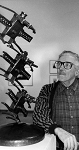
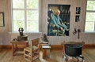

Torfrid Johannes Olsson
Bonde på Bygdeträsk 5:2, Burträsk sn, mångsidig konstnär under en lång tid. Blev 89 år.
| Född: | 1913-11-14 Bygdeträsk 5, Burträsk fs, Burträsk sn. [1] |
|---|
| Död: | 2003-06-23 Bygdeträsk 5:2, Bygdeträsk, Burträsk fs, Slellefteå kn. [2] |
|---|
| Vigsel: | 1942-06-24. |
|---|
| Levde: | 1981 Bygdeträsk 5:2, Bygdeträsk, Burträsk fs, Slellefteå kn. [3] |
|---|
Noteringar
Torfrid Olsson (1913 - 2003)
Museum Torfrid Olsson
Museet är en hyllning till en av vår tids främsta symbolister. Utställningarna visar en välrepresenterad konstnärs egensinniga och originella skulpturer, bilder i många olika tekniker samt historik, ateljè och mycket annat med anknytning till Torfrid Olssons mångåriga konstnärsbana.
Samlingarna omfattar även verk från konstnärens tidiga epoker: Porträtt, karikatyrer och motorsågstavlor" liksom svarvade figurer och souvenirer av olika slag.
I arrangemanget ingår även utsmyckningsmodeller, dikter, urklipp, korrespondens samt litteratur som samlats i ett litet bibliotek.
Naturnära, fantasirik konst i olika tekniker, ofta med symbolisk syftning kring fruktbarhet eller onskans förhärjelse. Objekt som verktyg och redskap inarbetas ofta i konstverken.
Utställningar: Separat - och samlingsutställningar på ett stort antal platser i Sverige samt Norge, Finland och Estland.
Representerad: Nationalmuseum, Moderna museet, Göteborgs konstmuseum, Västerås konstmuseum, Umeå museum, Statens konstråds samlingar, Umeå, Skellefteå och Stockholms stads samlingar samt ett flertal kommuner och landsting.
Offentliga uppdrag: Badhusets entréhall i Burträsk 1974, Byske centralskola 1975, Regionsjukhuset i Umeå 1978, Entréhallen vid Fredsförbandet i Arvidsjaur på uppdrag av Statens konstråd 1980, Arjeplogs sjukhem 1981, Lasarettet i Skellefteå 1983, Industriellt Utvecklingscentrum i Skellefteå 1983, Västerbottensteaterns teaterhus med utsmyckning både inom- och utomhus 1984, Inom - och utomhusutsmyckningar i Norsjö 1990-92, m.m.
Museum Torfrid Olsson är beläget i konstnärens hemby, Bygdeträsk söder om Burträsk i Västerbotten, 30 kilometer inåt landet från bottenvikens stränder. Byggnaden ligger vid Europas längsta björkallè som bildar en ådra genom det sköna kulturlandskapet kring Göksjön. Ett inspirerande landskap som bjuder på vida vyer, inte minst i Bygdeträskliden och Kvarnbyn, en by som för övrigt står värd för årliga kulturarrangemang.
Skapande verksamhet av olika slag är ett tydligt inslag i dessa byar. Som kuriosa kan nämnas att den kände formgivaren Stig Lindberg har sina rötter i Bygdeträsk.
Källor:
bygdetrask.skelleftea.org/torfo.htm
www.ahnlund.com/ahnlund/Artists/Torfrid/34TO.htm
Museum Torfrid Olsson
För ytterligare information om öppettider m.m.
Tel. 0914 - 210 01, 210 05 eller 0730 - 80 67 52
Turistbyrån Burträsk 0914-105 30
Personhistoria
| Årtal | Ålder | Händelse |
|---|
| 1913 |
|
Födelse 1913-11-14 Bygdeträsk 5, Burträsk fs, Burträsk sn [1] |
| 1915 |
1 år |
Brodern Henning Gustaf Olsson föds 1915-03-14 Bygdeträsk 5, Burträsk (AC) [4] |
| 1937 |
24 år |
Fadern Olof Oskar Olsson dör 1937-11-26 Bygdeträsk 5:2, Bygdeträsk, Burträsk fs, Slellefteå kn |
| 1942 |
28 år |
Vigsel Gerda Maria Elisabet Eriksson 1942-06-24 |
| 1973 |
60 år |
Modern Helena Viktoria Nilsson dör 1973-12-10 Bygdeträsk 5, Burträsk fs, Burträsk sn [5] |
| 1981 |
|
Levde Gerda Maria Elisabet Eriksson 1981 Bygdeträsk 5:2, Bygdeträsk, Burträsk fs, Slellefteå kn [3] |
| 1990 |
76 år |
Makan Gerda Maria Elisabet Eriksson dör 1990-05-13 Bygdeträsk 5:2, Bygdeträsk, Burträsk fs, Slellefteå kn [6] |
| 2002 |
88 år |
Brodern Ernst Olof Olsson dör 2002-06-02 Rampljusallén 20/Prästsjögården, Umeå lfs, Umeå kn [7] |
| 2003 |
89 år |
Död 2003-06-23 Bygdeträsk 5:2, Bygdeträsk, Burträsk fs, Slellefteå kn [2] |
Dokument
Källor
| [1] | Burträsk C:11 (291/1913 s.237, AIA:2D (1911-1925) fol. 1286 |
| |
| | |
| [2] | bef80 / RFV 03 / SPAR 97f |
| |
| | |
| [3] | Mtl Västerbottens län 1981 |
| |
| | |
| [4] | Burträsk AIA:2D (1911-1925) fol. 1286 |
| |
| | |
| [5] | RTB 74, MTL 71 |
| |
| | |
| [6] | SPAR 90, RTB 90 |
| |
| | |
| [7] | man91 / RFV 06 |
| |
|
|  |
(sent 1980-tal). Torfrid Olsson, bonde och konstnär i Bygdeträsk i Burträsk församling.
Konstverket: "Missilernas ankomst"
Källa: Museum Torfrid Olsson, Bygdeträsk
|
| |
 |
(sent 1980-tal). Torfrid Olsson, bonde och konstnär i Bygdeträsk i Burträsk.församling.
Konstverket: "Till deras minne"
Källa: Museum Torfrid Olsson, Bygdeträsk
|
| |
|  |
Torfrid Olssons porträtt av sin far Olof Oskar Olsson.
Kom ihåg att besöka Museum Torfrid Olsson i Bygdeträsk nästa sommar!
bygdetrask.skelleftea.org/torfo.htm
www.ostriket.net/22.html
|
|

{kind=link}
{kind=link}